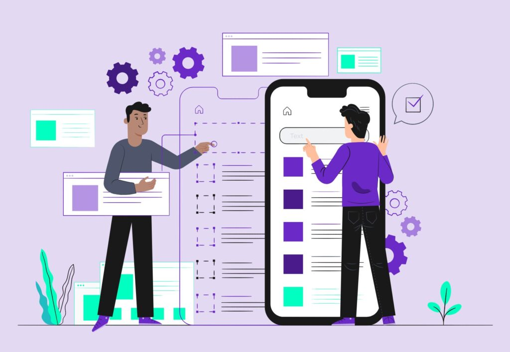

Diseñador de interfaces

Definicion
Un Diseñador de Interfaces de Usuario (UI) es el profesional responsable de diseñar la parte gráfica y visual de una aplicación, sitio web o dispositivo con la que interactúa un usuario. Su trabajo va más allá de lo estético: busca que la interfaz sea intuitiva, fácil de usar, accesible e inclusiva para todo tipo de personas.
¿Qué hace un UI Designer?
Un diseñador de UI se encarga de:
- Crear disposiciones visuales de páginas, menús y componentes interactivos.
- Elegir colores, fuentes, iconos, botones y demás elementos visuales.
- Diseñar wireframes y prototipos que muestran cómo se verá y funcionará la interfaz.
- Asegurar que el diseño funcione bien en diferentes dispositivos.
- Colaborar con desarrolladores para que lo que diseñó se implemente correctamente.
Conocimientos Claves
Un UI Designer debe saber sobre:
- Teoría del color y tipografía.
- Diseño de interfaces y componentes interactivos.
- Principios de usabilidad e interfaces intuitivas.
- Cómo transmitir visualmente una identidad de marca.
- Principios básicos de diseño adaptable a distintos dispositivos.
Aplicaciones que utiliza un diseñador de interfaces UI
Adobe XD, InVision, Sketch, Figma, Balsamiq, Axure